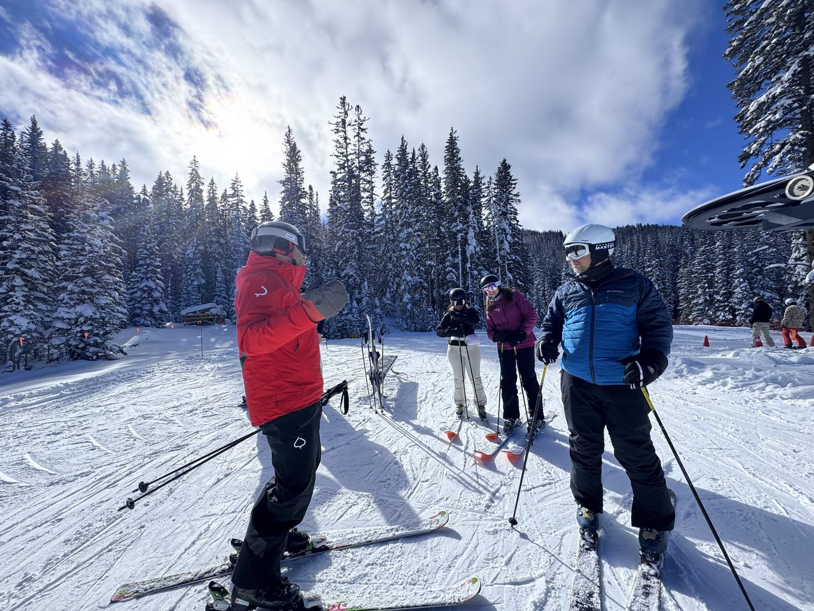

Perfil 01
Sua primeira vez na neve
Para famílias que querem descobrir a magia do inverno com segurança, tranquilidade e encantamento.
- Montanhas pensadas para começarButtermilk é conhecida como a montanha ideal para iniciantes, com pistas suaves, amplas e tranquilas. Snowmass também tem áreas dedicadas ao aprendizado, longe do fluxo dos esquiadores avançados.
- Escolas de esqui de referência, com turmas por idadeInstrutores experientes conduzem as crianças com método, paciência e muita diversão. Os pais escolhem entre aprender junto, ter aulas próprias ou aproveitar o dia no seu ritmo.
- A neve além do esquiPatinação no gelo, passeios de trenó, caminhadas com raquetes de neve e a vila iluminada transformam cada dia numa descoberta, inclusive para quem decidir não esquiar.